Home and care
Talk about where you want to live, how time and costs could be shared, and what would happen through illness, caring responsibilities, a move or a change in income.
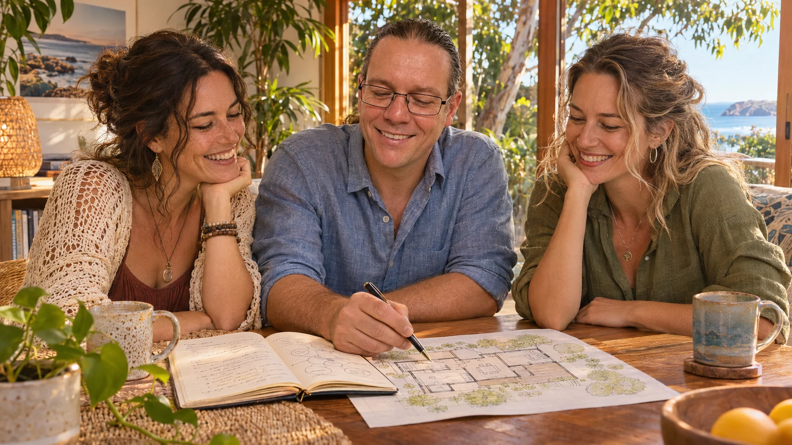
Luke Nathan Hayes’s invitation to explore the United Nations of Love.
AI-generated illustration
I want to build the United Nations of Love, a family business and love marriage across cultures. It is the group I personally want to form. The wider Global Group Marriages framework is open to many independent groups, from throuples to larger families with no fixed upper limit. Each group sets its own agreements.
I'd like this family to contribute to world peace through Joyful Responsible Abundance. We could build businesses together, make art, care for each other and create lasting ties across the places we call home.
I’ve worked in trades, transport, events and web design, lived in India for long stretches, and made music about Minjerribah, where I live. People I care about live far apart. I want more time for those ties, for family, for travel and for the work we would enjoy doing together.
I turn 44 on 3 December 2026. I call the year ahead A Protopian Gambit. For me that means putting time, work and resources into ideas that leave the people involved with more choices.
Aura of Intelligence is central to what I want to build. Each person would control their own memories, values, plans and AI tools. We could share what we agree is useful for travelling, working or caring for each other. See how Aura fits into shared life.
We could share one home, keep several homes, spend time together on return visits or take on care and parenting commitments. The people involved decide how friendship, intimacy, family and work fit together.
I'm heterosexual. For my own romantic relationships, I want to choose women who also choose me. I encourage women in the group to get to know, vet and invite men they'd like to join. I'd have the same say as any other partner. Each person chooses their own relationships, and the people taking on shared commitments decide together who joins them.
I want to be free to say what brings me joy and helps me live responsibly and abundantly. Everyone involved should have that same freedom to name who and what makes that kind of life possible for them.
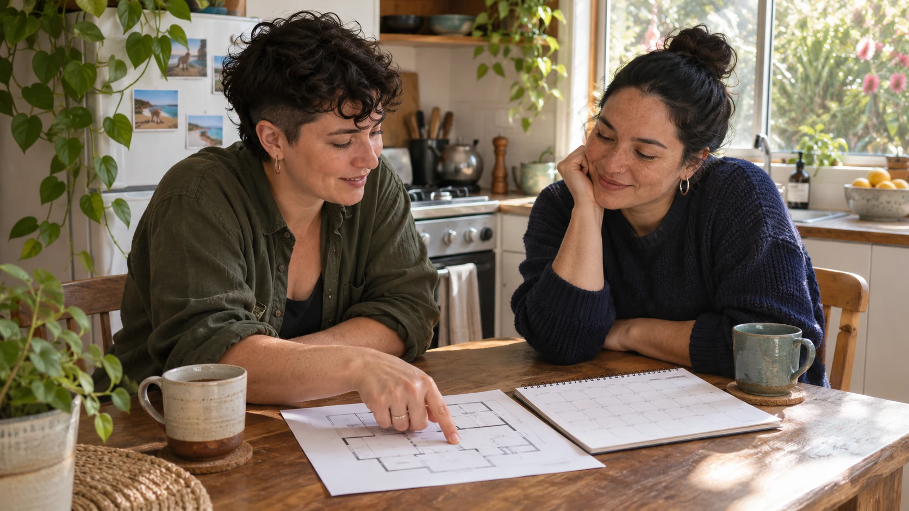
Talk about where you want to live, how time and costs could be shared, and what would happen through illness, caring responsibilities, a move or a change in income.
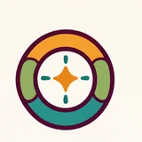
Romance, sex and living together are choices of the people directly involved. Each person can keep their own income, private space and independent work. People can revisit commitments as circumstances change.
Decisions about children need to serve their welfare and follow the law that applies. Adults can discuss trusted relationships, daily care, culture, schooling and how to preserve stability through change.
Pay, access to work and ownership follow the agreed commercial terms. If a relationship changes, the people involved can review their business arrangements and look after the people and responsibilities affected.
You could bring a business you already run, lead work where you live, work jointly on a contract, or share ownership of a new enterprise. We would agree what each person contributes, earns and owns.
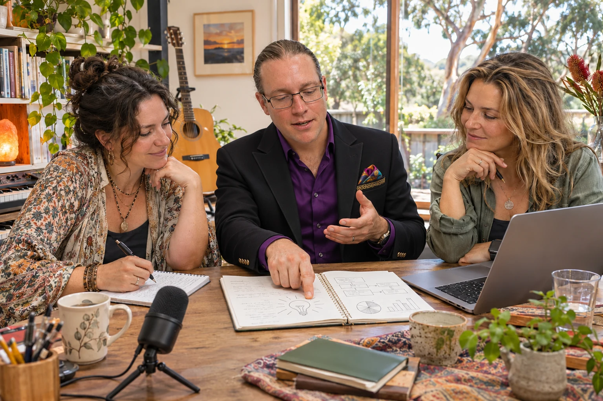
Make books, music, films, exhibitions and live experiences. Local teams could lead tourism, translation, food, sport or cultural learning, with hosts setting the terms for what people can share.
Develop AI software, personal devices or local computing services. A workshop might make parts, train a local crew to service them and help a nearby pool reuse waste heat where the location suits it.
Explore tools for care, accessible learning, continuity of records and disaster recovery. People with lived experience, specialist teams and local partners can shape work that suits their communities.
Mutual Futures explores business succession and shared ownership. ready SET Co-op explores paid employment, training and local enterprise. C-hours record verified voluntary contributions with no monetary equivalent or wage substitution.
Some of us might travel together. Others might lead work where they live or host people on their community’s terms. A return visit could bring people back to the same work and relationships over years. Two coastal communities might exchange what they’ve learnt about getting through storms, make a film together or spend time with family.
World Travel Patterns helps organise places, dates, passports, costs, cultural protocols and permitted activities. Visiting family, filming, working remotely and taking on paid work can call for different checks. Confirm the rules for your passport and planned activities with the relevant authorities before travelling.
Minjerribah is on Quandamooka Country. I see Brisbane 2032 as a date to aim for on projects in transport, accessibility, tourism, film, community computing and energy. People could lead projects here, elsewhere in South East Queensland or in the places they already call home. Work on Country begins with the rights and decisions of its custodians.
We could meet in mountain towns, cities and markets, spend time on each other's home ground and learn how people make things where they live. These AI-generated scenes imagine some of those encounters.
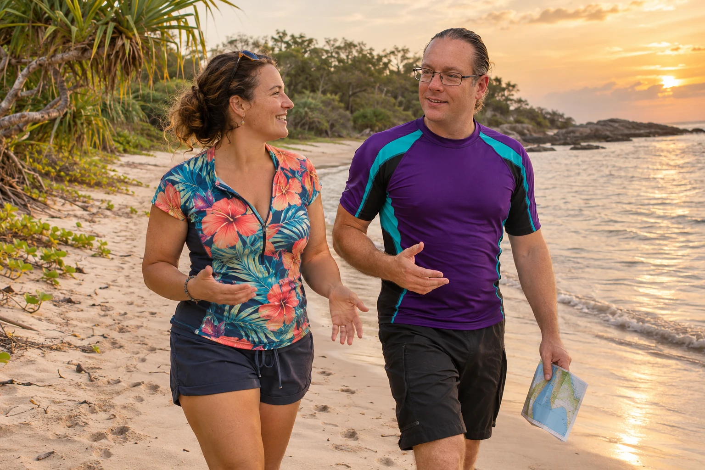
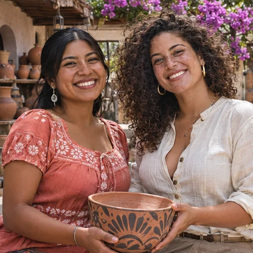
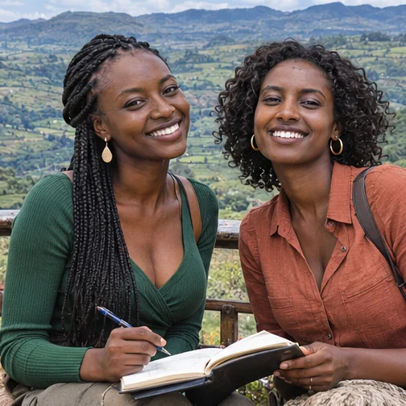
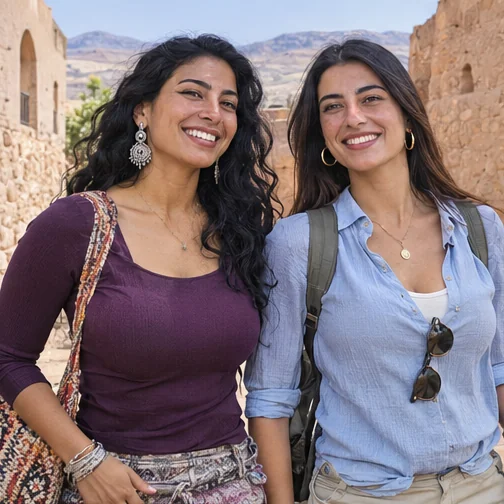
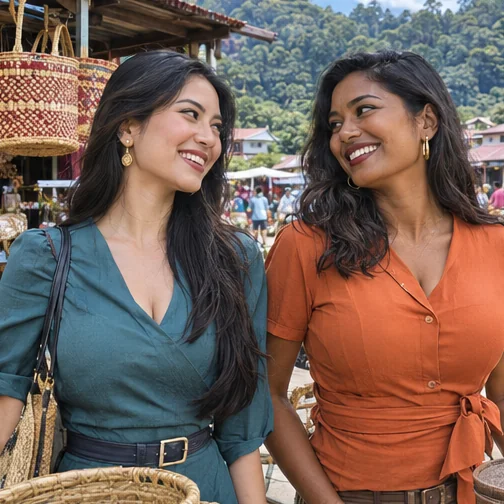
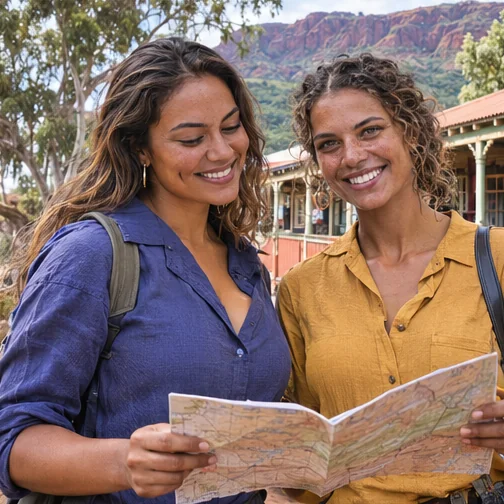
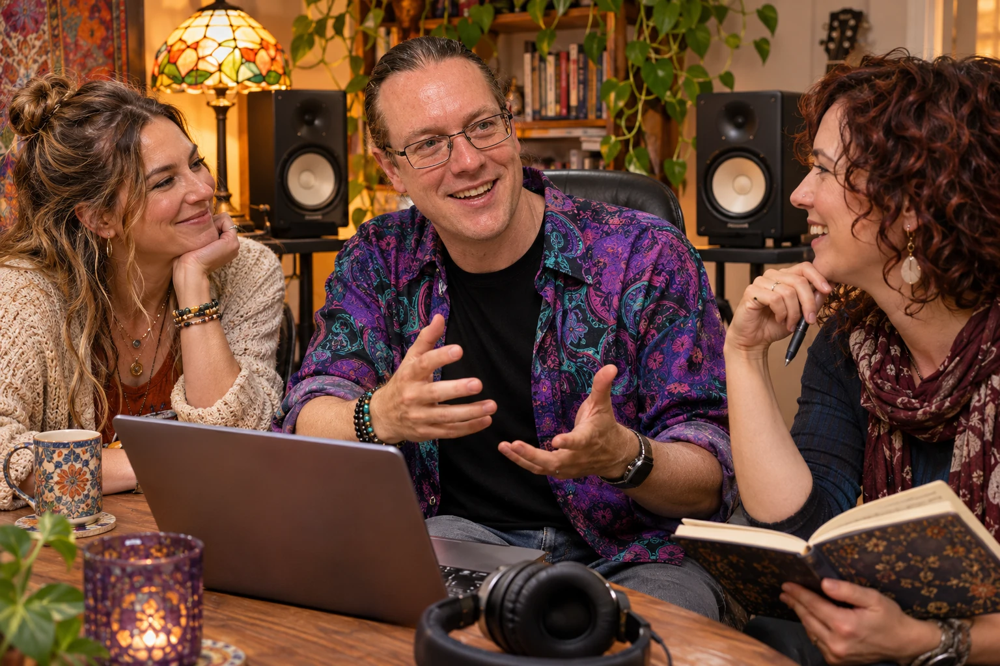
Music gives me a way to express ideas I also explore in the systems I design. On A Protopian Gambit, The Circle and the Solitary makes room for closeness and time alone, Adaptable Yes explores the freedom to change a choice, and Every Border a Bridge treats travel as a way to meet and build with people.
There’s room to translate songs, produce films, develop stories, make live experiences or bring your own practice into the work. The proposed GAJRA Earth gathering in July 2035 would connect local art, music and voluntary votes on values and virtues across three days devoted to Past, Present and Future.
The prospectus discusses commercial arrangements. Marital status and family responsibilities are governed by the laws that apply. The form of each agreement depends on the activity and where people live, work or hold assets.
Agree on which work to do, who leads, who can sign or spend, and how people can join or leave.
Work out payment, expenses, accounts, profits or losses, and what people own individually or together.
Write down who owns new work, what people can use later, who can access shared records and what an AI agent can do.
Review contracts, joint ventures, companies and co-operatives with advice for the places involved. Plan for a move, departure, illness, death or unfinished work.
Tell me what you’d like to build, which ideas you see differently and what would make it fair and worthwhile to explore them. You might bring a country, a business, a creative practice or an idea about relationships and shared life.
A name and a way to respond are enough. An expression of interest is non-binding and free. We would discuss any commitments, work, authority and ownership together. Commercial roles would use criteria relevant to the work and follow the law that applies.
Contact Luke through the Open Record